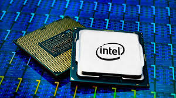

Desde los primeros microprocesadores en los años setenta, que apenas podían realizar unas pocas operaciones por segundo, hasta los actuales chips multinúcleo de alta
velocidad, la evolución de los procesadores ha sido fundamental para el desarrollo de la computación moderna. Hoy en día, los procesadores no solo se encuentran en
computadoras, sino también en teléfonos, automóviles, electrodomésticos inteligentes y hasta dispositivos médicos. La tendencia apunta a la miniaturización y a la
integración de tecnologías que mejoran el rendimiento sin comprometer el consumo energético.

Procesador de última generación
Inteligencia Artificial en la vida diaria
La Inteligencia Artificial (IA) ha dejado de ser un concepto futurista para convertirse en parte de la vida cotidiana. Hoy en día, millones de personas interactúan con
asistentes virtuales como Alexa o Siri, utilizan sistemas de recomendación en plataformas de streaming y confían en algoritmos de IA para recibir diagnósticos
médicos más precisos. Además, la IA se aplica en la conducción autónoma, en la automatización industrial y en la optimización del consumo energético en hogares
inteligentes. Sin embargo, el uso masivo de la IA plantea también retos éticos importantes, como la privacidad de los datos y el reemplazo de ciertos empleos.
Asistentes inteligentes
El futuro del almacenamiento en la nube
El almacenamiento en la nube ha transformado la manera en que las personas y las empresas gestionan su información. Antes, los archivos debían guardarse en discos
duros o dispositivos externos, lo que implicaba riesgos de pérdida o deterioro. Actualmente, la nube permite acceder a los documentos desde cualquier lugar del
mundo con una simple conexión a internet, facilitando la colaboración en tiempo real y la seguridad mediante copias de respaldo automáticas. Se espera que en el futuro
la nube evolucione hacia sistemas más rápidos, con mayor capacidad y mejor protección frente a ciberataques, consolidándose como la opción principal de almacenamiento digital.